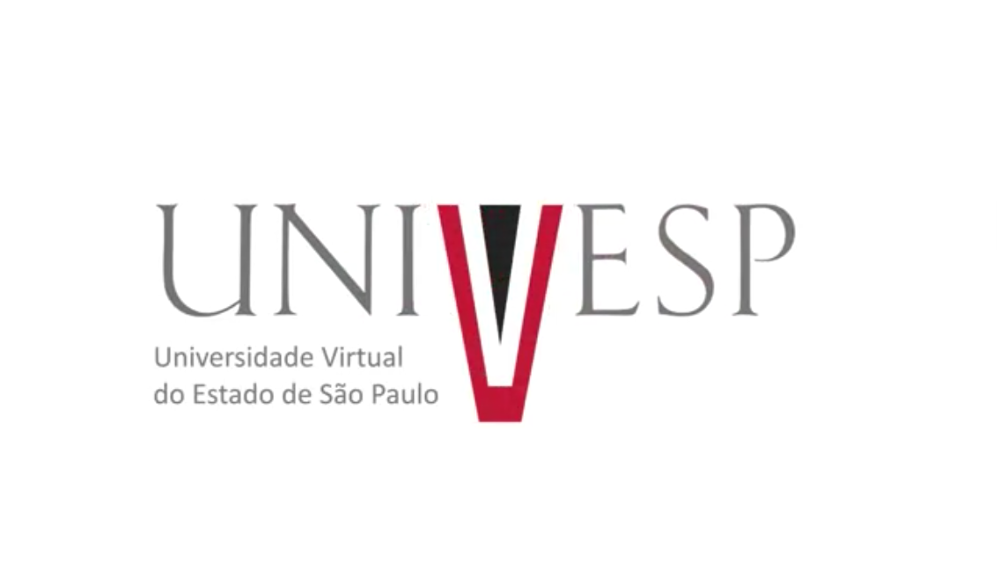

Este site foi elaborado para atendimento a disciplina Projeto Integrador dos cursos do Eixo Computação da Univesp.
Alunos:
Carlos Phelipe Tavares de Araújo
Flávio Francisco Martins Borges
Isabelle Christine Bertanha
José Flávio da Cruz
Leonardo Parra Vigo
Monique Mendes
Pedro Henrique Lopes Rufino
Rosani Alice Messias Lopes
Orientador: Renan Lima Baima
Grupo: Mairinque 002
